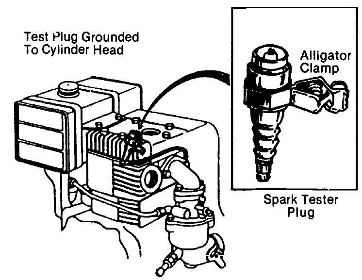
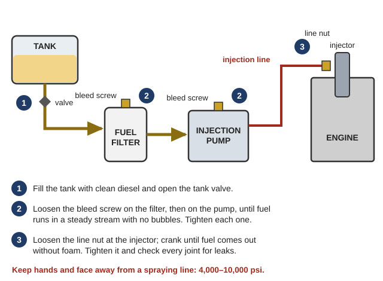
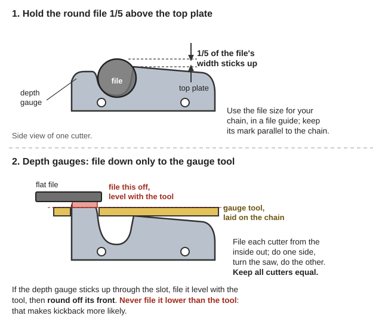
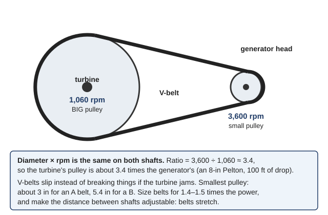
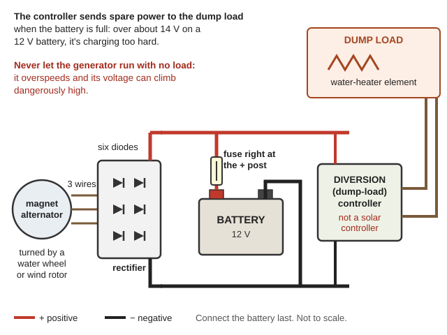

How to keep small gas engines, chainsaws and generators running, how to test and rebuild electric motors, and how to turn motors and car alternators into generators for charging batteries. The full shop manuals are in Engines-Motors\ (Small-Engines, Chainsaws-and-Saws, Electric-Motors, Motors-as-Generators). Creek hydro and solar are in Off-Grid-Power\; electricity basics are in the Navy NEETS modules there.
Fuel itself (storing, testing, getting it out of tanks) is in the Fuel guide.
⚠️ Rules that prevent the worst accidents
Never run an engine or generator indoors, in a garage, shed or crawlspace — carbon monoxide kills in minutes, even with doors open. (CPSC Portable Generator Hazards, p. 1)
Never refuel a hot or running engine. Keep the can touching the tank while pouring (stops static sparks). (TM 5-6115-271-14, p. 60)
Never plug a generator into a wall outlet ("backfeeding") — use a transfer switch or interlock. It can kill someone working on the lines. (how a transfer switch is wired; Transfer switch)
Capacitors bite. Motor capacitors (and microwave ovens) can hold a deadly charge after unplugging. Discharge across the terminals with an insulated screwdriver or a resistor before touching.
Pull the spark plug wire before working on a mower blade, saw chain or anything the engine turns.
Keep away from diesel injection lines while the engine turns. The injection pump pushes fuel at 4,000–10,000 psi (Practical Action Diesel Engine Repair, p. 13). Never hold a hand or face near a cracked line or a nozzle that is spraying. (Rule of thumb)
Fuel: pull the plug, cover the hole with a finger and pull the starter 2–3 times. A wet finger means fuel is arriving. If dry, check: fuel in the tank, shutoff valve open, cap vent not blocked, carburetor bowl (drain it — water or gum?), fuel filter and line. (MAVCC, pp. 595–598; drawings)
Spark: put a spare plug on the plug wire, rest it against the metal head and crank. A bright blue spark is good. Yellow, weak or none = clean or replace the plug, check the kill-switch wire, then the coil/magneto. (MAVCC, pp. 599–600; spark-tester drawing)
Compression: spin the flywheel backward against compression — a sharp rebound is good. Weak = loose plug or head, stuck valve, worn rings. With a compression gauge, crank at least six times before you read it. (MAVCC, pp. 602–603; flywheel check and gauge drawings)

A tester plug on the plug wire, grounded to the cylinder head: crank and look for a bright blue spark (MAVCC, p. 599).
Old fuel is the #1 problem. Gas goes stale in about 60 days without stabilizer (sooner with ethanol). For longer storage, drain the tank and run the carburetor dry, or add stabilizer and run it a few minutes so it reaches the carburetor. Keep cans sealed — water in ethanol gas separates and ruins engines. (Oklahoma Extension BAE-1746, p. 2)
Ethanol is a solvent. In an old, neglected engine it can loosen years of deposits that then clog the filter and tiny carburetor passages — the main reason for "ethanol trouble." Older engines (before about 1995) may also have rubber or cork parts that suffer. (BAE-1746, pp. 1–2)
Take a photo before you take it apart. Soak metal parts several hours in carb cleaner, then blow out every passage with air. (AAVIM, p. 97)
Plastic or nylon parts no more than 30 minutes; never soak cork or coated floats. (AAVIM, p. 95; p. 93)
Don't poke jets with wire — it enlarges them. Use a bristle, fishing line or air.
Always fit new gaskets. Float too high = floods; too low = starves. A metal float with gasoline sloshing inside, or a crushed one, must be replaced. (AAVIM, pp. 92–93; checking float height)
Two-stroke fuel (chainsaws, trimmers): mix oil at the ratio printed on the engine or in its manual (MAVCC, p. 186). Never run straight gas — it seizes the engine in minutes. Rule of thumb: most modern saws are 50:1 (about 2.6 oz of 2-stroke oil per gallon); older gear is often 16:1–32:1. Don't mix mineral and synthetic 2-stroke oils. (Two-stroke oil)
Routine care: check oil every use (4-strokes), clean the air filter often (a choked filter makes an engine run rich and weak), keep cooling fins clear, replace the plug yearly. (Air filter)
Replacing a starter rope: for a wrap-around (non-recoil) starter, use 3/16-inch braided nylon rope, usually 4–5 feet long — enough to wrap the pulley 3–5 times plus about 6 inches. Singe the cut ends with a match so they don't fray, and tie a figure-eight or double overhand knot in each end. (AAVIM, pp. 14–15; knots drawn step by step: figure-eight, double overhand) Recoil starters take thinner rope — most often 5/32 inch — that fills the pulley groove without binding. (AAVIM, p. 20; parts of a recoil starter)
Won't start or keeps dying: suspect air in the fuel lines (an "air lock"), an empty tank or a clogged filter. (Practical Action, p. 12) Bleed the air out (p. 16):
Fill the tank with clean diesel and open the tank valve.
Loosen the bleed screw on the fuel filter (and on the injection pump) until fuel runs out in a steady stream with no bubbles. Tighten it.
Loosen the injection line nut at the injector and crank the engine until fuel comes out without foam.
Tighten the nut and check every joint for leaks.

Bleed in order, from the tank toward the injector (a diagram drawn for this guide).
Don't run a diesel generator lightly loaded for long. It runs too cool, soot builds up in the engine and exhaust ("wet stacking"), and over time this can permanently damage it. (FEMA P-1019, p. 150) Give it a real load when you run it.
Diesel fuel catches fire less easily than gasoline, but once burning a diesel fire is fierce (Practical Action, p. 6). Cold-weather gelling, water and fuel substitutes are in the Fuel guide.
The four chain rules: sharp, depth gauges set right, correctly tensioned (more bar and chain trouble comes from wrong tension than anything else), and well oiled. The chain should not hang below the bar but should still turn freely by hand. (USFS, p. 31; parts of the chain; right and wrong tension; Saw chain)
Filing: use the file size for your chain, with a guide. Hold the file level with about one-fifth of it above the cutter's top plate, guide mark parallel to the chain. File from the inside of each cutter outward, all of one side, then turn the saw around. Keep all cutters the same length. If the chrome is chipped, file until the chip is gone. (USFS, pp. 33–34; filing angles; file height and direction)
Depth gauges (the little humps in front of each cutter): check with a gauge tool every few sharpenings, file down only to the tool, and round off the front. Never file one lower than the tool. (USFS, p. 34; what the depth gauge does; gauge tool and rounding off)
After several hand filings, the angles drift. The Forest Service then grinds the chain on a chain grinder to restore them — if you have none, file slowly and check angles against a new chain. (USFS, p. 32)

The file's height on the cutter, and the depth gauge filed only down to the tool (a diagram drawn for this guide).
Take off the bar and chain. Clean the bar groove from the tip toward the base, clear the oil holes, check the rails for wear or flared edges (rail wear drawn), grease the nose sprocket, and turn the bar over when you refit it so it wears evenly.
Air filter: tap it gently clean. Never blow it out with an air hose and never wash it in saw fuel — a damaged filter lets grit into the engine.
Spark arrester screen in the muffler: replace it if it has any holes. Illinois Valley summers are fire season — a saw spitting sparks into dry grass can start a wildfire.
Check the chain brake, loose bolts, and the rubber anti-vibration mounts.
Things that make kickback more likely (USFS, p. 32; the kickback zone on the bar nose): a loose or dull chain, wrong filing angles, depth gauges filed too low or left square, loose rivets or cracked links, and anti-kickback parts removed.
Outdoors, far from doors, windows and vents, exhaust pointed away from buildings. Put a battery-powered CO alarm in the house. (Engine-generator, Carbon monoxide poisoning)
In rain, run it under an open, canopy-like roof on dry ground where water can't puddle under it. Dry your hands before touching it.
Use heavy outdoor extension cords rated for more than the total watts on them, with all three prongs and no cuts. Don't pinch them in doors or windows.
Turn it off and let it cool before refueling. Keep its fuel outside living areas.
Set it nearly level — the Army 3 kW set allows no more than 15° of tilt — on planks or timbers if the ground is soft. (TM 5-6115-271-14, p. 60)
Maintenance(rule of thumb — the generator's own manual comes first): oil change every 50–100 hours (sooner when new), clean air filter, fresh or stabilized fuel, run it under load for 20–30 minutes once a month. Machines that sit idle for long periods should be "exercised" on a schedule to keep oil moving and moisture out. (TM 5-683, p. 41)
Load: add up the running watts of what you'll plug in, plus the start surge of motors (fridges, pumps, power tools can need 2–3× their running watts for a second — rule of thumb). Keep steady load under about 80% of the generator's rating.
Motors need extra generator size. When a big motor starts, voltage dips and other motors can stall. Unplug the other loads, start the big motor, then plug the small loads back in. (FM 5-424, p. 113)
A generator feeding only heaters, cookers or light bulbs (a "resistive" load) can carry only about 80% of its kVA rating — e.g. a 6.25 kVA Army set carries 5 kW. (FM 5-424, p. 115)
Drive a ground rod — or a ¾-inch copper or steel pipe — at least 8 ft into the ground.
In rock or hard ground, a buried metal plate can stand in (the manual gives sizes).
Soak the ground around the rod with water to help it conduct.
Run copper wire from the rod to the generator's ground stud — braided cable is best, No. 6 or heavier solid wire will do — and tighten it securely.
No output but the engine runs? Check the breaker on the generator, then the brushes and voltage regulator (most small generators). A generator that sat unused can lose its residual magnetism — see "flashing the field" below.
Power: is the right voltage reaching the motor terminals? Check fuses, breakers and the switch.
Load: take the belt off. If the motor now runs, the machine it drives is stuck.
Bearings: power off, turn the shaft by hand. If it won't turn freely, a bearing is dry, worn or stuck.
Thermal protector: many motors have a red reset button; others reset themselves once cool. A tripped protector means something else is wrong — find it.
Starting switch: a motor that hums but won't start, yet runs if you spin the shaft by hand, has a fault in its starting circuit (see below).
Windings: a burned winding has a strong burned smell, and you may see charred insulation.
Single-phase motor hums but won't start (pumps, compressors, shop tools): suspect the start capacitor or the centrifugal start switch, which should click open at about ¾ speed (Illinois, p. 28; capacitor-start motor; the two parts of a centrifugal switch; Motor capacitor). Discharge the capacitor and check it; if it's open or shorted, replace it (TM 5-683, p. 56). A bulged or leaking one is dead; a meter with a capacitance setting tells for sure. Replace with the same microfarads and same or higher voltage(rule of thumb). Switch contacts can be dirty, burned or pitted, or a wire can burn in two. (Illinois, p. 24)
Windings must have no opens (infinite ohms through a winding), no shorts (much lower reading than its twin), and no grounds (any reading from a winding to the frame).
The three windings of a 3-phase motor should read nearly the same resistance; a high reading between any two leads means an open winding. (Navy Electrician's Mate, p. 237)
Insulation test (megger): right after shutdown while warm and dry, with capacitors disconnected. At least 0.5 megohm for motors 250 V and under, 1 megohm up to 1000 V. Write readings down — a steady fall over months warns of trouble even above the minimum. (TM 5-683, p. 54)
Bearings: a rumbling or hot bearing is the most common motor failure. Replace with the same number stamped on it. Fit new bearings by heating them to no more than about 200 °F (oil bath or oven, not a flame). (Navy EM, p. 225, with bearing-puller drawings) Never wash sealed bearings in solvent — factory-sealed bearings shouldn't be disturbed. Open bearings get repacked half to two-thirds full of motor bearing grease; too much grease makes heat. (Illinois, p. 23; TM 5-683, p. 58; greasing a bearing step by step; Ball bearing)
Brushes and commutators (drills, saws, mixers, car starters, DC motors): replace brushes that stick, are chipped, or are worn to about half their original length (or to within ⅛ inch of a riveted clip). (Navy EM, p. 228; brush holder and brush; Brush) Seat new brushes by pulling fine sandpaper (grit toward the brush) under them in the direction the motor turns, lifting the brushes on the return stroke, then blow out the carbon dust. (Navy EM, p. 229; sanding a brush to fit) A blackened, grooved commutator can be cleaned with a commutator stone or fine sandpaper — never emery cloth; emery dust conducts electricity and causes shorts (Illinois, p. 24; commutator stone) — or turned lightly on a lathe (no more than 0.010 in per cut). (Navy EM, p. 233; turning a commutator)
Keeping spare motors (salvage is your parts store): wipe them clean, lubricate the bearings, grease the bare shaft against rust, wrap them in heavy paper, and store them dry. (Illinois, pp. 23–24)
Rewind with the same total copper area per turn and same turns (two thinner wires in parallel can replace one thick one). Dry a damp winding at no more than about 195 °F (90 °C); then dip it in varnish and bake it as the varnish maker directs. (DOE, p. 9; p. 11)
Small burned motors are often easier to replace from salvage than to rewind — keep a stock.
Permanent-magnet DC motors (treadmill motors, wheelchair, scooter, some cordless tool motors): spin them and they make DC directly. Output voltage rises with speed, so choose one that makes at least 14–15 V at the speed you can actually turn it to charge a 12 V battery. Add a blocking diode so the battery can't run it as a motor. (Rule of thumb) (Brushed DC motor, Diode)
Car alternators: built-in rectifier and regulator, but they need high speed (rule of thumb: about 1,500+ rpm — step-up pulleys or belts for wind, water or pedals) and a battery connected to power their field — they are not self-starting. The field draws about 3 A, which wastes a lot at low power. (Alternator and Regulator Servicing, p. 11; how an alternator makes current; testing the rotor)
Induction motors (ordinary AC motors) as generators: drive it about 1–5% faster than its synchronous speed — e.g. a motor rated 1725 rpm (1800 synchronous) is driven at about 1820–1890 rpm. Output rises with the extra speed. (DOE Microhydropower Handbook Vol 1 Pt 2, p. 54) On its own (not tied to the grid) it needs capacitors across the windings to excite it. Sources disagree here: the DOE handbook (same page) and the European hydro guide say an induction generator can't run cut off from the grid (ESHA Layman's Guidebook Pt 2, p. 30), while village hydro schemes run them off-grid with a capacitor bank and controller (Practical Action Micro-Hydro O&M, p. 23). Expect some trial and error.
Rule of thumb: start with run capacitors whose current at rated voltage roughly matches the motor's no-load current, then trim until voltage and frequency are right. Use AC motor-run (film) capacitors, never electrolytic start capacitors.
Expect about 70–80% of the motor's rating as output (rule of thumb). Needs a ballast (dump) load or controller so voltage doesn't swing as loads switch. Aging capacitors make frequency creep up; a capacitor running hotter than the others is failing — feel them once a month. Too many capacitors overheat the generator. (Practical Action, pp. 23–26)
Watch the battery voltage. Over about 14 V on a 12 V battery means it's charging too hard — use more power or divert it. (Piggott Axial Flux, p. 41)
Flashing the field: if a generator won't build up voltage, it may have lost its residual magnetism. The Army 3 kW set does it with two 1.5 V flashlight batteries touched momentarily to the regulator terminals (TM 5-6115-271-14, p. 73); village hydro operators use a 6 V or 12 V battery on brush-type generators (Practical Action, p. 26). Use the lowest voltage that works, touch it only briefly, then try again. (Rule of thumb)
Old method: the 1939 North Dakota circular shows turning a car generator into a 6-volt wind charger (drawing), and the DOE Wind Power for Farms handbook covers matching any generator to a rotor.
When the gasoline and diesel are gone, a portable generator still holds two valuable machines: an engine and a generator head (the part that makes electricity). There are two ways to keep using them.
1. Keep the whole set and change the fuel. FEMA's wood-gas plans say stationary engines on wood gas "run electric generators, pumps, and industrial equipment" (FEMA Wood Gas Generator, p. 19). A generator sits still, so it needs a gas cooler and a second filter that a moving vehicle wouldn't, and hot gas costs power: about 1% for every 10 °F above 70 °F (p. 28). Most portable generators have engines of 15 hp or less; for those FEMA says to use a 6-inch fire tube with a narrowed throat (p. 67). The rest (building it, and the carbon monoxide danger) is in the Fuel guide.
2. Take the generator head off and turn it with water or wind. The rest of this section is about that.
What's inside: two kinds of portable generator
Standard generators (the open-frame kind) have a generator head bolted to the engine:
The rotor's field is fed through brushes and slip rings, or with no brushes at all: a small exciter and diodes spinning on the shaft feed it (ESHA Small Hydro Pt 2, p. 31; brushless alternator). The Army's 3 kW set is the brushless kind; its book gives the normal winding resistances (TM 5-6115-271-14, p. 26).
A voltage regulator (AVR) holds the voltage steady by changing the field's strength, because the speed has to stay fixed for the frequency (NEETS 5, p. 78). Many cheap heads instead use a capacitor on an extra winding to make their field (rule of thumb).
Speed sets the frequency: a 2-pole head must turn 3,600 rpm for 60 Hz, a 4-pole head 1,800 rpm (NEETS 5, p. 76; 2-pole vs 8-pole). Almost all portable sets are 2-pole, 3,600 rpm (rule of thumb).
Most heads have only one bearing. The other end of the rotor is bolted onto the engine's crankshaft, so a head taken off the engine needs a new shaft end and bearing before a belt can drive it (rule of thumb; the hydro handbook notes horizontal generators "usually have a single bearing", DOE Microhydropower Handbook Vol 1 Pt 2, p. 57).
Inverter generators (the quiet, closed-case kind). There is no manual for one in the library; this is how they are generally built (rule of thumb):
The engine's flywheel is the rotor: a ring of magnets spinning around a stator with many poles. It makes three-phase AC whose voltage and frequency both rise with speed, and there may be several separate sets of windings (for the inverter's own power, for battery charging).
A rectifier turns that into DC, and the inverter board turns the DC into steady 120-volt, 60 Hz power. The board usually also works the throttle and needs signals from the engine, so it rarely works without its engine.
Charging batteries from a slow water wheel or wind rotor: rectify it to DC, then a diversion controller
Test it first (below). Keep its magnets away from iron and don't drop it
Wound-field generator head (standard generator)
A fast turbine, like a Pelton wheel on a good drop, belted up to its speed
Wants 3,600 rpm; voltage holds but frequency swings with the load
Engine
Wood gas (above), or turning a pump, mill or saw directly
Same care as any engine (top of this guide)
Voltage regulator, capacitors
Stay with the generator head
Discharge capacitors before touching
Inverter board
Rarely reusable without its engine; keep for parts
Can hold a deadly charge
Bearings, pulleys, frame, outlets, breaker, wire
Your hydro or wind build
Check bearings (below)
Taking it apart safely
Drain the fuel, unplug the spark plug wire, and work outdoors or with the doors open (rule of thumb).
Discharge every capacitor (inverter board, voltage regulator, capacitor-excited heads): the charge left in capacitors "is, in many cases, sufficient to cause a lethal shock." Use a shorting probe with its ground clip on first, touch each terminal several times, and keep your hands off the metal (NEETS 21, pp. 32–33; shorting probe). Short a stored capacitor's terminals with a wire; "CHARGED CAPACITORS CAN KILL" (p. 34).
Turn the shaft by hand before opening anything: binding means a bent shaft, bad bearings or debris (same page).
Taking a magnet flywheel off: hold it with a holding tool (the nut's thread direction depends on which way the engine turns), then use a puller, not a hammer: "Too much hammering will jar the magnetism out" (AAVIM Small Engines Vol 2, pp. 58–59; flywheel pullers). Don't drop it, store it away from iron, and pick metal chips off the magnets (p. 60; MAVCC, p. 374).
Bearings: leave good ones on the shaft; pull with the puller on the inner race (see "Electric motors: testing and repair" above; Navy Electrician's Mate, p. 224).
Testing what you salvaged
Spin it and measure. Turn the shaft with a drill, a lathe or a rope at a speed you can count, and read the AC volts across the output wires. On a magnet alternator the voltage goes up in proportion to speed, so one reading tells you what it makes at any rpm (Piggott, p. 36).
Speed from frequency: Hz = rpm × number of poles ÷ 120, so a multimeter that reads Hz is a tachometer (same page).
DC after the rectifier ≈ 1.4 × the AC reading, minus about 1.5 V (same page). To charge a 12 V battery you need about 14 V DC.
Short two output wires and turn it: a good one becomes stiff but smooth; "If it trembles as you turn it then there is a fault" (Piggott PMG Manual, p. 42). No meter? A 3-volt flashlight bulb across two wires will glow when you turn it (p. 40).
A wound-field head makes little or nothing until its field is fed: spin it with the field wires on a 6-volt battery (Kuphaldt Vol 6, pp. 174–175), or flash the field as described in "Motors as generators" above.
With an ohmmeter: slip ring to shaft should read open (otherwise the rotor is grounded); ring to ring should match the spec (open = broken winding, low = shorted); each diode reads low one way and high the other. Never test diodes with a 110-volt test lamp (Alternator Servicing, pp. 17–19). The Army's brushless set: flash the field; if the voltage holds under load the stator and rotor are good; if not, test the diodes on the exciter rotor (TM 5-6115-271-14, p. 95).
Megger the windings to the frame (minimums under "Electric motors" above). A head rated for standby use "may not hold up under continuous operation at full load", so run it well below its rating (DOE Vol 1 Pt 2, p. 59).
Matching it to a water wheel or wind rotor
The 3,600-rpm head is the hard part. "The 2-pole generator with a speed of 3600 rpm is too high for practical use with a microhydropower system"; 1,800-rpm heads are the usual choice (NRCan Micro-Hydropower Systems, p. 24).
Water: a Pelton wheel turns fastest on a high drop. Its buckets work best at about half the speed of the jet (ESHA Pt 2, p. 20), so an 8-inch Pelton on 100 ft of drop turns about 1,060 rpm, and needs about 3.4 to 1 to drive a 3,600-rpm head (arithmetic). Many small turbines run under 400 rpm and need a speed increaser (p. 28). Water wheels are slower still (NRCan, p. 23).
Wind: an 8-ft rotor in a 7 mph wind turns about 167 rpm (Piggott, p. 9); a 3,600-rpm head would need about 22 to 1 (arithmetic), which isn't practical. "Almost every small wind generator on the market uses a directly driven permanent magnet generator" (DFID-ITDG Small Wind Systems, p. 12): use the magnet alternator, or build Piggott's (above).
Belts: the speed ratio is generator rpm ÷ turbine rpm (DOE Vol 1 Pt 2, p. 81); pulley diameter × rpm is the same on both shafts (Illinois Electric Motors for Farm Use, p. 17). V-belts are the best choice and slip instead of breaking things if the turbine jams (DOE, p. 85). Don't go below the smallest pulley for the belt size, about 3 in for an A belt and 5.4 in for a B (p. 86; table). Size the belts for 1.4–1.5 times the turbine's power (p. 89), make the distance between shafts adjustable because belts stretch, and expect to lose 3–6%, up to 10% if loose (pp. 95–96). Don't mix old and new belts, and mark the generator and its base so it goes back in line (Practical Action Micro-Hydro O&M, pp. 19–20).
Mounting: a car wheel-bearing hub makes a good bearing for a homemade alternator (Piggott, p. 15; mounting it). Driving the shaft directly needs careful alignment and a coupling that flexes a little (Illinois, p. 17).
Runaway: with no load, a turbine and generator can reach two to three times normal speed (DOE Vol 1 Pt 2, p. 61), and a disconnected magnet alternator's voltage "may become dangerously high" (Piggott, p. 37). Always keep the dump load on (rules above).

Pulley diameter × rpm is the same on both shafts (a diagram drawn for this guide).
Hooking it up
To charge batteries: a three-phase rectifier (six diodes, one pair per wire) turns the output into DC (Kuphaldt Vol 3, p. 122; three-phase bridge), then a diversion controller and the battery. For a long wire run, rectify to a high voltage and step it down at the battery (NCAT Micro-Hydro, p. 18).
Not for motors or electronics unless something holds the frequency steady: "Fluctuating frequency will destroy small motors and solid state equipment" (DOE Vol 1 Pt 2, p. 56).
A three-phase head on one phase gives only about a third of its rating (same page).
What to expect: magnet generators are over 80% efficient (NRCan, p. 25); the whole system is the turbine × the belt × the generator (ESHA Pt 2, p. 26). The water sets the limit: watts ≈ gallons per minute × feet of drop ÷ 10 (see the creek hydro section of the Off-Grid Power guide), and Oregon's water law applies (above).

Rectify, fuse the battery at its + post, and let a diversion controller send spare power to a dump load (a diagram drawn for this guide).
Pictures & diagrams
Look before you try it. 🖼️ = drawings in the books on this drive; 📷 = photos in the offline Wikipedia.